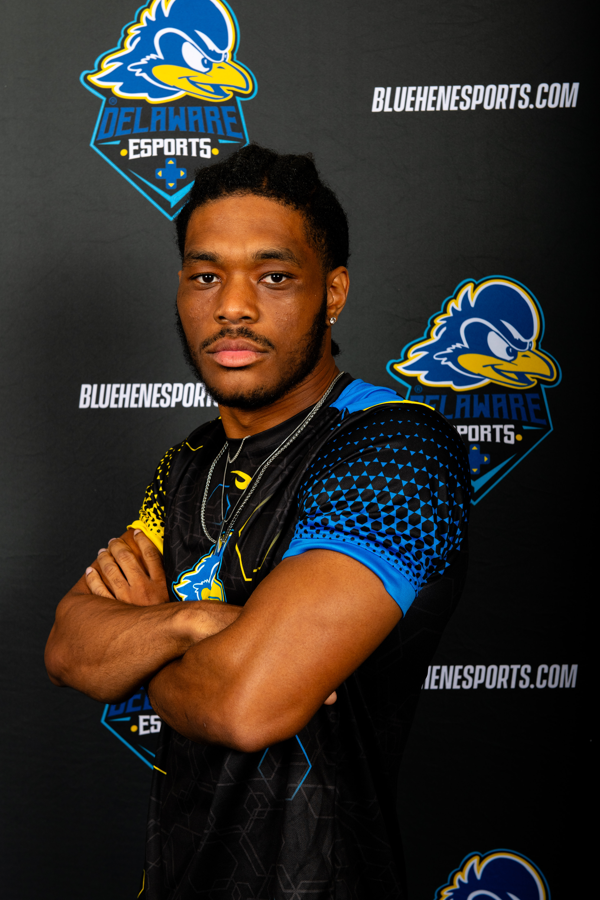
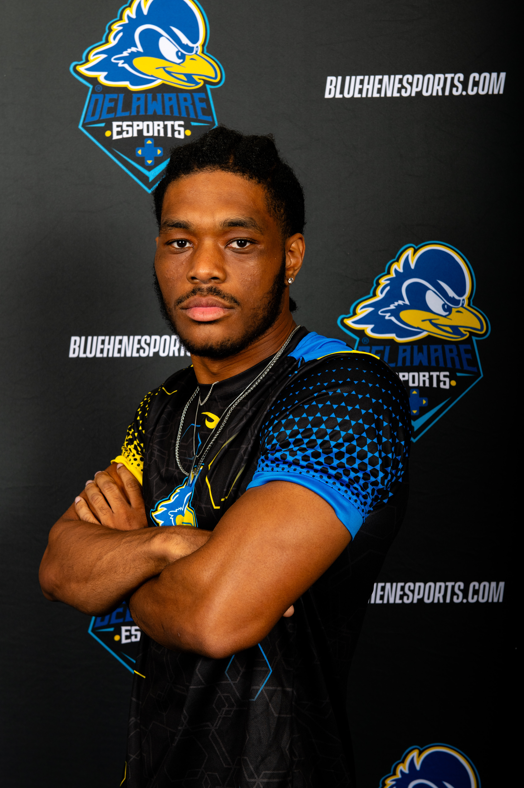
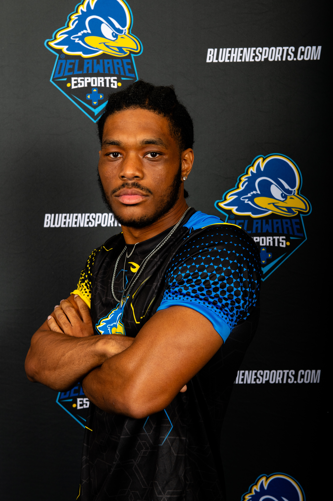

I am a software engineer and game developer with a passion for artificial intelligence, gamification, and anything related to space!
I graduated from the University of Delaware with a major in Computer Science and a minor in Mathematics, earning a cumulative GPA of 3.5. Throughout college, I held several leadership roles, including Resident Assistant, co-founder and president of the campus Game Development Club, team leader in the Esports program, and participant in a freshman leadership program. I also competed in multiple hackathons and game jams, earning over $2,000 in awards for my contributions and innovation.
Let’s build something meaningful and make an impact on the world!
I prefer coding in C#, Python, and Typescript, but I can also use similar languages in regards like Java, Javascript and others. These main 3 coding languages cover a good basis of what things I like to create and develop. They will be listed below in order:
I also made different variations of these tech stacks, such as a game using Python and a Python library that allowed GUIs. In general, I like app, game, and web development and the act of creating something, even if its in turns of artificial intelligence!

To mainly contact you, you can reach me through email, tvrice252@gmail.com or LinkedIn. You can not reach me by number. I accept and read all emails everyday between 9am - 9pm.